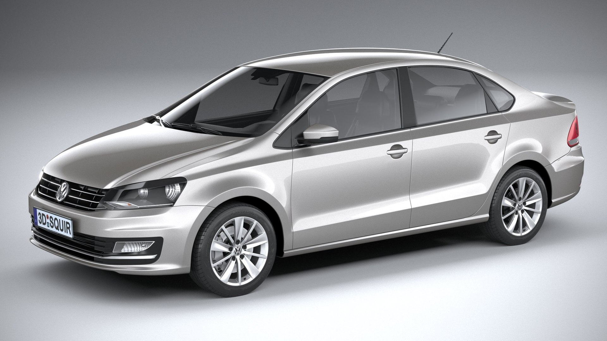

Останні публікації

З чого все почалося: Volkswagen Polo Sedan (2012)
Це мій перший серйозний досвід. Надійний, економний і перевірений часом автомобіль. Головне правило: своєчасна заміна масла вирішує все.
Короткі поради автомобілістам
- Завжди прогрівайте двигун взимку хоча б 2-3 хвилини.
- Перевіряйте тиск у шинах.
- Топ порад для автомобілістів